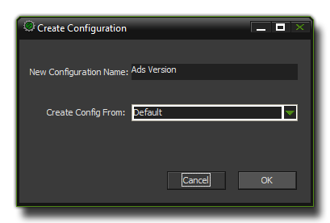

Configurations 配置
本章讲述了所有关于配置的内容。Here you can find all the information on Configurations.
由于需要进行跨平台开发以及为了让游戏能够适应不同的客户端和设备， GameMaker:Studio引入了一个配置管理器来简化配置工作。使用这个系统，你可以在任何时候快速的在不同的启动画面、游戏图标以及包含的文件之间切换，同时测试和导出那些目标平台上的可执行文件，完全不需要改一行代码。 注意 :该功能只能在 GameMaker:Studio 专业版中使用。
Due to the demands of cross platform development and the need for one product to be available and customised for different clients and/or devices,
GameMaker:Studio
includes a configuration manager to make things simpler. Using this system, you can quickly switch between different splash screens, icons and included files and test or export only those that are relevant to the target platform or client at any time, all from the same base code.
NOTE :This functionality is limited to the
Professional Versionof
GameMaker:Studio.
要创建不同的配置，我们建议你先创建一个被称作“默认配置”的配置项，把 所有 你可能会用到的文件和插件等都添加进来，包括启动画面和文件图标（你可以通过 全局游戏设置来做到）。请注意，你在添加这些 文件和 插件的时候会让你选择所对应的游戏配置项，最好在这个时候就一并添加到这个“默认配置”中，这样当你在创建其它的配置的时候，你只需要取消那些你用不到的文件前面的勾选框就可以了，非常简单。
当你创建完了默认配置后，在窗口的最上方你可以看到一个写着 "Manage" 的按钮。如果你点击这个按钮，就会弹出配置管理器对话框，如下图所示：
To set up your configurations it is recommended that you first prepare a "default" config by incorporating
allthe configurable assets for the project into
GameMaker:Studio, including icons and splash screens (done through the
Global Game Settings),
included filesand any
extensionsthat you may need. Please note that with the included files and extensions, you can select a target platform for them, and that should also be done at this point so that when you create individual configurations it is simply a question of un-ticking those that you don't need.
Once you have set up the default configuration, at the top of the GUI you will see a button marked "Manage". If you click on this it will bring up the Configuration Manager window, as shown below :

在这你里可以创建和命名新的游戏配置（这些配置是储存在你 当前的项目中的）。 同时你也可以删除和重命名这些配置（注意，那个“默认”配置是没有办法删除的）。点击“+”按钮可以创建一个新的配置。如果你打算创建新的配置，你会看到下面这个对话框：
Here is where you create new base configurations and give them a name (these configurations are project specific). You can remove configurations and rename them (note that the "default" configuration cannot ever be removed or renamed) as well as create new ones by clicking on the "+" button. If you choose to make a new one, the following dialogue will be shown : at the bottom which will bring up the following dialogue :

在这里你可以给你的新配置起个名字，同时选择一个已存在的配置作为基础配置来创建新的配置（通常都会选择默认配置，不过有些特殊情况你需要从别的配置里选择）。点击“OK”按钮会回到配置管理器，然后你就可以创建更多的配置或者退出配置管理器回到 GameMaker:Studio。 现在你已经创建了你自己的游戏配置了，接下来你需要进一步设置这些配置以便它们确实的起到相应的效果。要改变游戏的配置，你需要对不同的目标平台设置不同的 全局游戏设置，或者添加、移除游戏图标、启动画面以及其它各种和配置有关的内容，包括为不同的游戏配置设置不同的 纹理分组。接下来你需要在 包含文件和 插件里勾选或者取消勾选相应的选项，同时如果你给不同的配置设置了不同的纹理分组，你还需要去检查所有的图像资源（精灵和背景等）。你所做出的这些改动都会被记录在配置管理器中，每当你切换配置时相应的改动会被自动应用在你的项目中。
Here you are prompted to choose a new name for your new configuration and a previous config on which to base this (usually the default one, but in some special cases you may need to choose one of your other configs). Clicking okay will return you to the manager where you can then create more custom configs or exit back to
GameMaker:Studio.
Now that you have created your configurations you have to go ahead and customise them so that they actually do change the configurations! For that you should now review the
Global Game Settingsfor each target platform and add or remove icons, splash screens and any other information that is relevant to the configuration, as well as set up the
Texture Groupsfor each configuration. Then you should go through the
included filesand
extensionsand tick (or un-tick) those that are needed too, and if you have set texture groups for each configuration you will also need to go through all the graphics assets (sprites and backgrounds) and re-assign them. Every change you make to these settings will be remembered by the configuration manager and recalled whenever you change configurations.
-noisyfox-